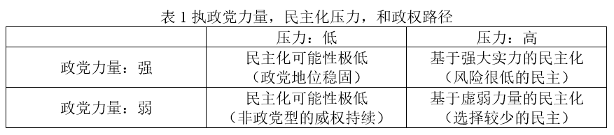

Rachel Beatty Riedl等 | 威权领导下的政治转型
原创 政文观止
政文观止Poliview
微信号 zhengwenguanzhi
功能介绍 从一群年轻人的视角出发，专业、专注、专解海内外比较政治经济研究的前沿佳作。
__发表于
比较政治学 121个
文献来源： Riedl, Rachel Beatty, Dan Slater, Joseph Wong and Daniel Ziblatt, “Authoritarian-Led Democratization,” Annual Review of Political Science ,Vol.23,No.1(2020) :315-332.
作者简介：
Rachel Beatty Riedl，康奈尔大学政府系教授；Dan Slater，密歇根大学政治学系教授；Joseph Wong，多伦多大学政治学系教授；Daniel Ziblatt，哈佛大学政府系教授。
民主化缘何而起？对这一问题的回答在某种意义上有两种截然不同的看法。第一种被普遍接受的观点认为，政治转型是在别无选择的情况下发生的：政权从内部分裂和崩溃（O’Donnell et al.，1986）；日益高涨的民众抗议威胁用暴力推翻统治者和他的核心圈子（Geddes 1999, Acemoglu & Robinson 2006）；新兴的资产阶级提出了强劲的政治转型要求，以求保护他们不断增长的财富不被侵占（North & Weingast 1989, Ansell & Samuels 2014）；又或者，作为金主的超级大国坚持将“民主转型”作为持续提供必要援助和支持的条件（Bratton & van de Walle 1997）。换言之，民主化诞生于危机之时，或旧政权崩溃的边缘。正如Dahl（1971）所说，当压制的成本超过了容忍的成本时，我们可以预计威权统治者会勉强让步，允许政治转型发生。
然而本文想总结的是第二种观点认为，统治者会在他们认为风险很小的时候开启政治转型。相对的经济平等、资产流动性、和/或拥有丰富自然资源意味着竞争性民主不会带来向下再分配的巨大压力（Boix 2003, Dunning 2008）；政权内部知情者掌握反对者的把柄，不会因为担心转型后的追责而惧怕让步（Nalepa，2010）；统治者可以利用成功的执政历史在竞争性民主中寻求再造和革新（Grzymala- Busse 2002）；旧集团的精英还能设计他们退出的方式和时间，使竞争性民主的规则对他们有利（Albertus & Menaldo 2018）。
本文并不想反驳第一种观点。然而，政治转型对统治者有时是一个策略性的决定，而非被迫之举。来自不同地区和不同历史阶段的例子说明，威权领导下的政治转型可以被识别，并且经常发生。
威权领导下的政治转型
两类因素构成了这一政治转型路径的允许条件和有利条件（Soifer 2012）。
有利条件是执政党相对自身的民意支持、组织力量、以及开启改革后能继续掌权的主导地位，对不断增加的政治权利、政治竞争需求的风险评估。也就是说，政治转型的生成力量是在威权统治者对自己能继续在竞争性选举中获胜并维持地位有高度自信的情况下，由国内国外对自由化转型压力的增加而产生。这种有限风险和潜在收益之间形成平衡，统治者相信自己在威权终结后还能存续，转型进程得以催生（Slater & Wong 2013, Riedl 2014, Ziblatt 2017）。这一逻辑给统治者带来的相应好处有很多。例如，他们可以增加来自国内温和派和改革派的支持，获得国际支持、发展援助、外商直接投资；他们可以利用制度变革来处理派系斗争，比如将内部压力通过建立新政党的方式释放分离；他们也可以使国内的反对力量分裂，因为威权不再是一个可以统一反对声音的聚焦点。
而允许条件是执政党的制度遗产，如此前的政党组织、进行社会控制和获得社会支持的策略（Slater 2010, Riedl 2014, Ziblatt 2017）。这些制度力量允许执政党在面临更多挑战时能保有权力、充分评估风险，并将政党力量转换为选举胜利。
以上有利条件和允许条件的结合不但促进了转型，也有利于旧执政党在他们最终输掉选举时学会失败（Friedman & Wong 2008）。而旧精英集团对政治转型的长久承诺，是民主韧性和稳定的一个根本因素（Ziblatt 2017）。
当然，威权执政党在他们实际面临的风险程度、政治游戏的内容（以及潜在代价）、还有是否能准确估计自己失去对改革进程的掌控及选举的可能性这些方面都有差别（Grzymala- Busse 2002）。但关键的一点是，在一系列执政党可能面临的风险和其他选择的潜在得失对比中，执政党有足够的力量能掌控改革以继续保持权力和特权（Albertus & Menaldo 2018）。因此，很大程度上基于执政党的历史和组织力量，政治转型的风险是有限的。
风险因素和评估
威权执政党如何识别并感知风险，并评估在政治转型中管控这些风险的能力？尽管工人阶级（如历史上的西欧）或中产阶级（如20世纪大部分寻求发展主义的东亚经济体）的增长要追溯到资产阶级民主的新现代化理论，我们认为他们都不是促进国内转型诉求的必要条件，更不用说充分条件。执政党必须依赖于这些特定的力量来源来提高转型需求相对于代价的所得：促进发展和提供公共物品的历史；根植于直接或间接联结之上的全国性基本盘；和/或统治精英在组织团结上并且有凝聚力。
本文论点区分了政权的历史力量和他们在任意时点面临的挑战。强劲的挑战不意味政权必然是弱势的。我们也认识到，正是因为执政党的历史力量，挑战反而能成为稳固合法性、民意支持或内部团结的机遇。另外，威权领导下的政治转型也可以使之前日益增长的反对力量更容易分裂。
我们用下表总结威权政党和民主化压力如何塑造改革前景和路径。本文关注表1的右侧。当执政党很弱而民主化压力很大时，处于弱势地位的执政党很有可能会选择镇压而不是转型。而表1的右上角是我们关注的重点。强势地位的执政党遭遇民主化压力并不必然使之变弱。当强势政党权衡后认为自己设计政治转型的时间和方式是应对上升压力的最佳策略，且这种压力并没有构成马上会推翻政权的威胁时，威权领导下的政治转型最有可能发生，并且最终产生一个稳定的民主政体。

执政党力量
威权执政党力量的强弱由五点决定 （Ziblatt 2017, p. 49）。第一，政党需要有在全国范围内动员支持者的能力。第二，政党不但有能力鼓励外部团体并且能让他们服从（如工会、经济团体、公民社会等）。第三，政党需要能调用忠诚的专业人士，来有效部署用于竞选活动的资源。第四，政党需要有能力动员诸如民族主义、宗教、爱国主义这些议题，来跨越现有分歧或减少阶级/族群成为选举分歧的影响。第五，政党需要有组织上的边界或“防火机制”，来防止极端组织渗透到政党的决策机构或和内部叛变者形成同盟。
这些组织上的优势和全国性的根基使得威权政党能接受政治转型而不会迎来失败（Slater & Wong 2013），且在这一过程中维护自己的利益。政党的精英也会因为他们对政治能力、支持者、和“黏性”组织资源的投资，而认识到参加选举是对他们利益的最大维护。政党可以通过策略性的改革获得短期的选举成果，但也可能因为新制度种下了后续选举失败的种子。威权执政党并不必然想让自由化改革走向全面民主化，更不想自己在选举中失败。但也正是因为他们在转型中的领导地位和历史遗产，成为威权继任党后作为反对党能具有独特优势，并且因为预计自己可以在将来的选举中重获权力而对民主存续做出间接贡献（Loxton & Mainwaring 2018）。愿意接受失败在很大程度上是以能够在未来再次获胜为前提的。基于这种战略眼光，政治转型得以进行。政党得以避免被永远淘汰的命运，旧集团的精英们也可以最大限度地减少被永久性排斥的个人代价，如流放或刑事迫害。
本文还讨论了第一波民主化浪潮中欧洲的案例、中国台湾地区及加纳的近期案例，对理论进行了说明，并且总结了如何防止民主进程倒退的机制。基于篇幅限制，以上内容摘编未能展开。欧洲的案例来自Ziblatt在2017年出版的专著，通过对欧洲内部的两种民主化路径的对比，论证了坚实的保守政党是十九、二十世纪英国、比利时和瑞典民主化并成为稳定民主政体的关键。中国台湾地区和加纳的例子说明基于欧洲历史的因果机制也能解释其他情境。而加纳的例子进一步说明，强国家能力或执政党保守、亲商的意识形态，都不是威权领导下转型路径的必须。
编译：陈宇茜 编辑：康张城